기존 리듬 게임은 고도의 반사신경, 극악의 난이도 및 암기 의존으로 인해 대중적 진입 장벽이 높습니다. 반면 일반 액션 RPG는 성장에만 몰두해 조작의 몰입감이 무뎌지기 쉽습니다.
[Pulse World]는 넉넉한 판정(엇박자 통용)을 제공해 피지컬 압박을 완전히 덜어내는 대신, 폭발적인 타격 피드백과 거대한 군무(협동) 시스템을 도입하여 "음악에 맞춰 몸을 흔드는 인간의 본원적 쾌감"을 온전히 누릴 수 있는 캐주얼 액션 게이머 및 RPG 코어 유저를 동시에 타겟팅합니다.
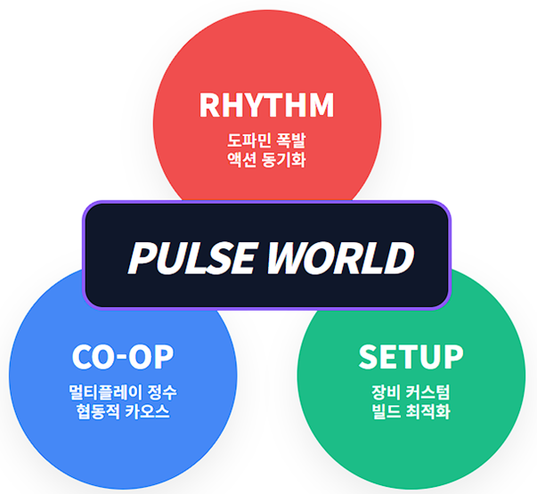
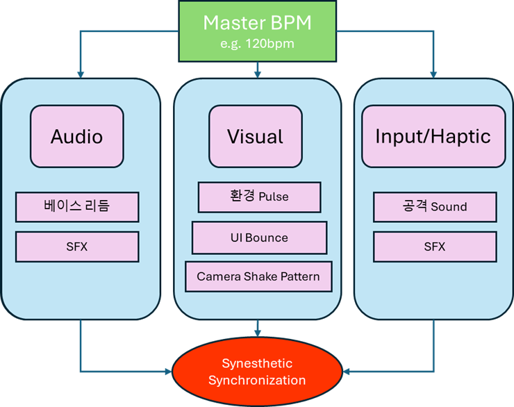
Pulse World의 모든 시스템(BPM, 판정, 자원)은 맹목적인 기계적 설정이 아니라, 뚜렷한 다크 판타지적 개연성을 지닙니다.
세계 최심부에 잠든 거대한 심장이 이 세계의 모든 생명 에너지인 '맥류(Pulse Flow)'를 펌프질합니다. 인류는 에너지가 응축된 '맥석(Pulse Stone)'을 채굴해 문명을 꽃피웠지만, 무분별한 채굴로 인해 세계 곳곳의 템포가 뒤틀리며 생태계가 파괴된 '오염(Pollution)' 구역이 속출했습니다.
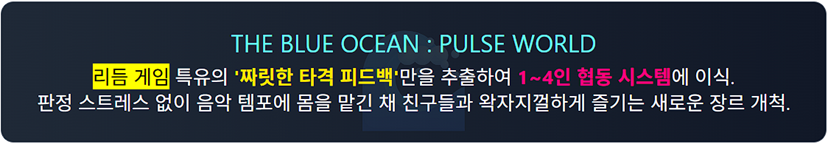
플레이어는 대지의 진동(BPM)을 감지하는 이능력자 '맥류사'입니다. 무기를 휘둘러 거대한 대지의 파동을 끌어내기 위해서는, 무조건 심장이 요동치는 맥동의 정점(On-Beat 정박자)에 맞춰 행동해야만 100%의 힘을 발휘할 수 있습니다. 이것이 유저가 음악에 맞춰 싸워야 하는 설정적 당위성입니다.
인간의 눈에는 흉폭한 몬스터로 보이지만, 실상 이들은 무분별한 채굴로 불안정해진 흐름을 복구하기 위해 세계가 급조한 '대지의 면역 세포(자정 작용)'입니다. 플레이어가 보스를 죽이는 행위는 거시적으로 세계의 리듬을 더 박살 내는 모순적 서사를 품고 있습니다.
| 생태계 등급 | 세계관 명칭 | 전투 패턴 및 행동 특징 |
|---|---|---|
| 일반 (Normal) | 맥류 잔향 (Pulse Echo) | 본능적인 정벌 패턴만 구사하며 단순한 정박자 공격(1~2가지 패턴)을 가합니다. |
| 정예 (Elite) | 맥류 결정체 (Pulse Crystalline) | 고밀도 오염 에너지 집합체. 플레이어의 콤보를 끊는 치명적인 엇박자와 복합 돌진 장판을 전개합니다. |
| 보스 (Raid) | 맥류 심핵 (Pulse Core) | 오염의 근원. 파티의 4/4박 브금을 강제로 일그러뜨려(3/4박, 5/4박 변조) 광역계를 가하는 변조자 기믹. |
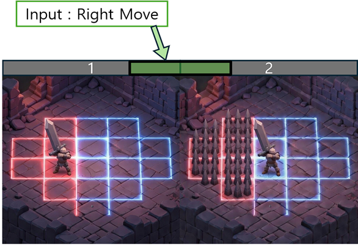
모든 액션은 [입력(Input)] ➔ [전조(Warning)] ➔ [타격(Damage)] ➔ [경직(InputLock)] 타임라인을 가집니다.
본 게임에는 고정 직업이 없으며, 플레이어가 착용한 **6개의 장비 부위**가 곧 직업(클래스)이자 전투 스킬을 대변합니다. 특히, 4개의 핵심 부위는 착용하는 즉시 키보드의 [Q, W, E, R] 퀵슬롯 스킬로 바인딩되어 나만의 전투 덱(Skill Deck)을 완성하게 됩니다.
전투의 기본 템포와 사거리, 타수가 결정되는 슬롯입니다.
대검 장착 시 넓고 무거운 1박자 광역베기가, 쌍검 시 16비트의 빠른 연속 찌르기가 Q 슬롯에 배정됩니다.
보스의 장판을 피하기 위한 포지셔닝 스킬입니다.
군화를 신으면 정박 1칸, 섀도우 부츠는 대지를 슬라이드하며 2칸을 횡단, 페도라는 즉발 점프로 장애물을 회피합니다.
적 방어력 감소, 지속 데미지 도트(DoT) 장판 생성, 혹은 전방에 방어막을 쳐주는 등의 전투 어시스트형 액티브 스킬 슬롯입니다.
평상시엔 캐릭터 주위를 돌며 현재 BPM을 시각화(Beat Indicator)합니다. 에너지가 차면 "공명 QTE"를 유발하는 강력한 궁극기를 사용할 수 있습니다.
"Perfect 3회 성공 시 다음 공격 시너지 발산" 같은 리듬 기반 트리거형 패시브와 파티 안정성 역할을 돕는 고정 스탯 오라 기능 부위입니다.
| 무기군 (역할) | 리듬 포지션 (Beat) | 오디오 주파수 배치 (Audio Frequency) |
|---|---|---|
| 초중량 대검 (탱커) | 메인 비트 (Downbeat) | 저음역대 (20~80Hz) 킥 드럼: 묵직한 "쿵쾅-" 파티의 뼈대와 보스 홀딩. |
| 암살 쌍검 (딜러) | 오프 비트 (Syncopation) | 고음역대 (4k~10kHz) 하이햇: 날카롭고 숨 막히는 16비트 극딜. |
| 장궁/총기 (원거리) | 아르페지오 (Arpeggio) | 중고음역 플럭 신스: 통통 튀며 화성적 변주의 빈 곳을 채움. |
| 지팡이 (서포터) | 코드 패드 (Synth Pad) | 중역대 공간음 (500~2kHz): 웅장한 버프 오라와 회복 제공. |
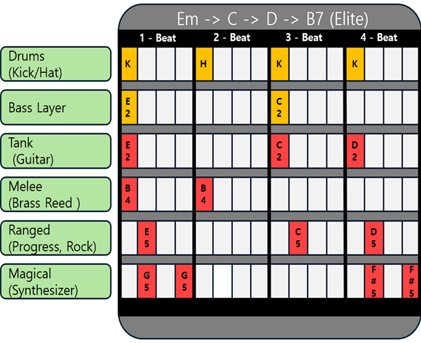
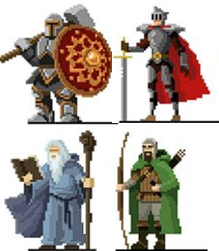
파밍의 피로도를 낮추기 위해 Town 내 던전 시퀀스는 필드 돌파(Wave 기반) 후 보스전으로 자연스럽게 귀결됩니다.
| Section 1 (탐색/예열) | Section 2 (위기/텐션 상승) | Section 3 (클라이맥스/결전) |
|---|---|---|
|
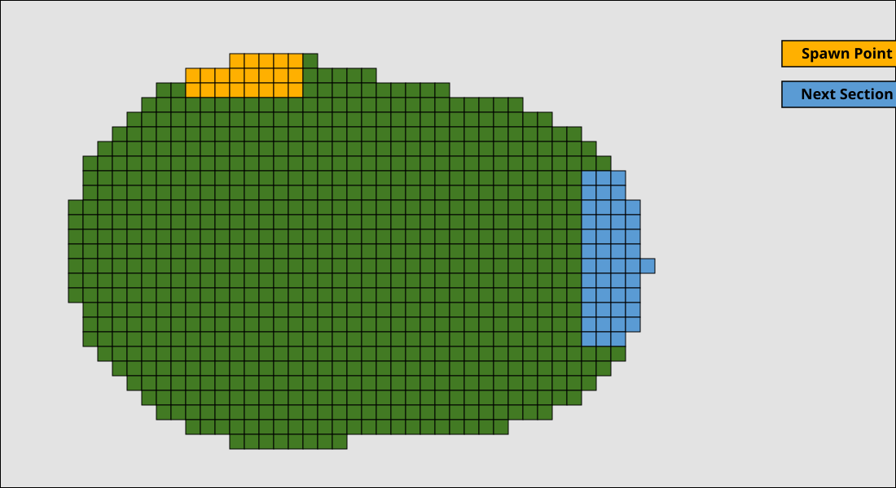 |
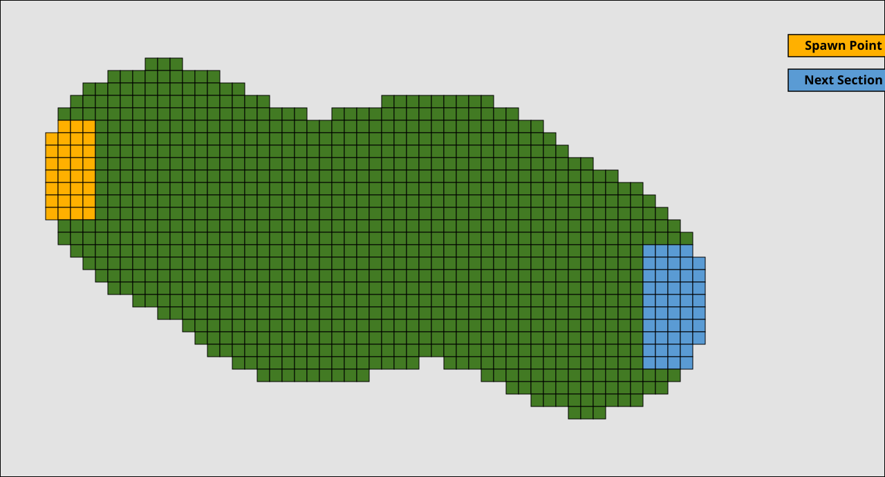 |
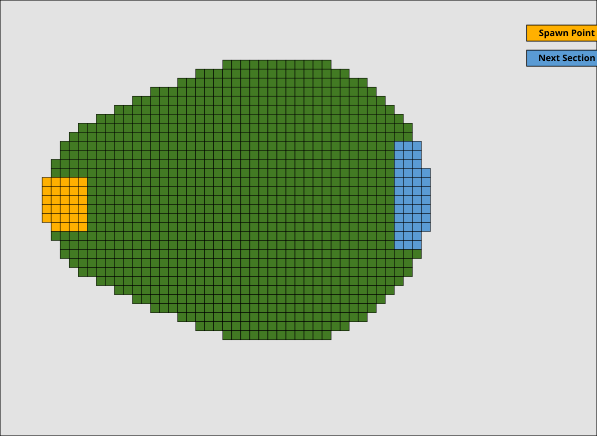 |
| 단순한 정박 위주 일반몹 섬멸 | 엘리트 난입과 엇박자 전조 등장 | 거대 보스전 및 전리품 획득 |
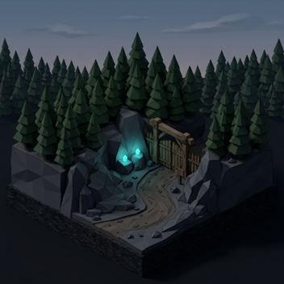
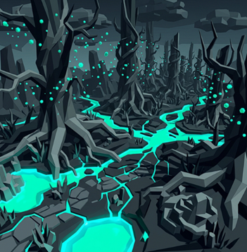
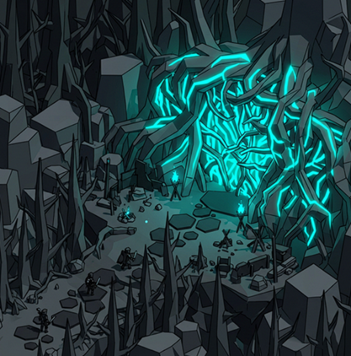
게임의 경제는 P2W 요소가 배제된 '계정 귀속(Account Bound)' 및 '인스턴스 루팅' 파밍입니다. 던전에서 떨어지는 **장비 설계 도면(Blueprint)**과 재료를 마을의 공방에서 제작합니다. 여러 장의 동일 도면을 융합시켜 Magic ➔ Rare ➔ Epic 등급으로 대성공(진화/Mutation)시키는 것이 파밍의 엔드 콘텐츠입니다.
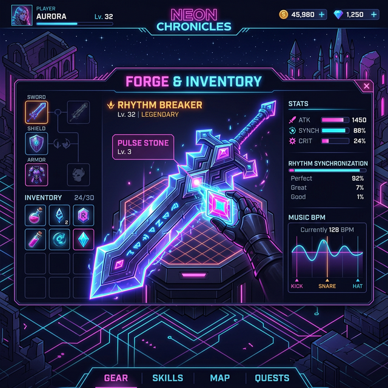
장비를 Epic 등급으로 강화하면 더 많은 소켓이 뚫리며, 거기에 맥석(Pulse Crystal)을 박아 스킬의 기믹을 완전히 바꿉니다.
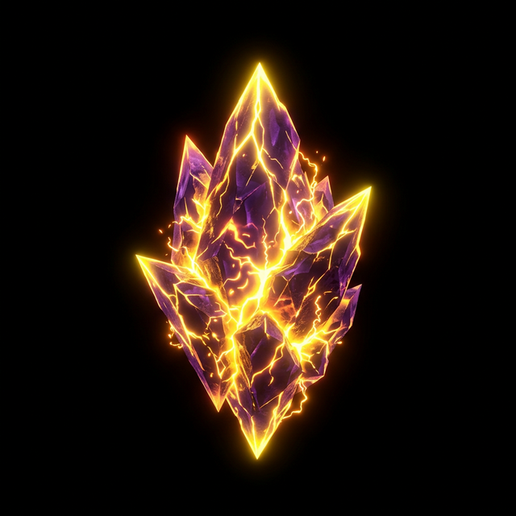
과충전 (Overcharge)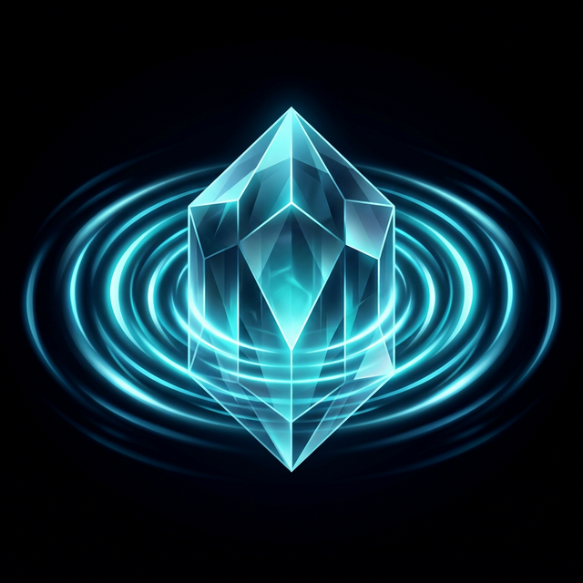
유리 메아리 (Glass Echo)복잡한 쿼터뷰 전투 중 마우스와 눈의 피로도를 최소화하는 직관적 화면 설계 지침입니다.
"4인 코옵 멀티플레이어 리듬 게임? 네트워크 핑 딜레이 때문에 절대 불가능하지 않나요?"
리듬 장르 멀티플레이의 가장 큰 한계인 **통신 지연 불협화음** 현상을 기획자, 사운드 디자이너, 서버 개발자가 유착한 기만 엔지니어링(Illusion Engineering)으로 원천 차단했습니다.
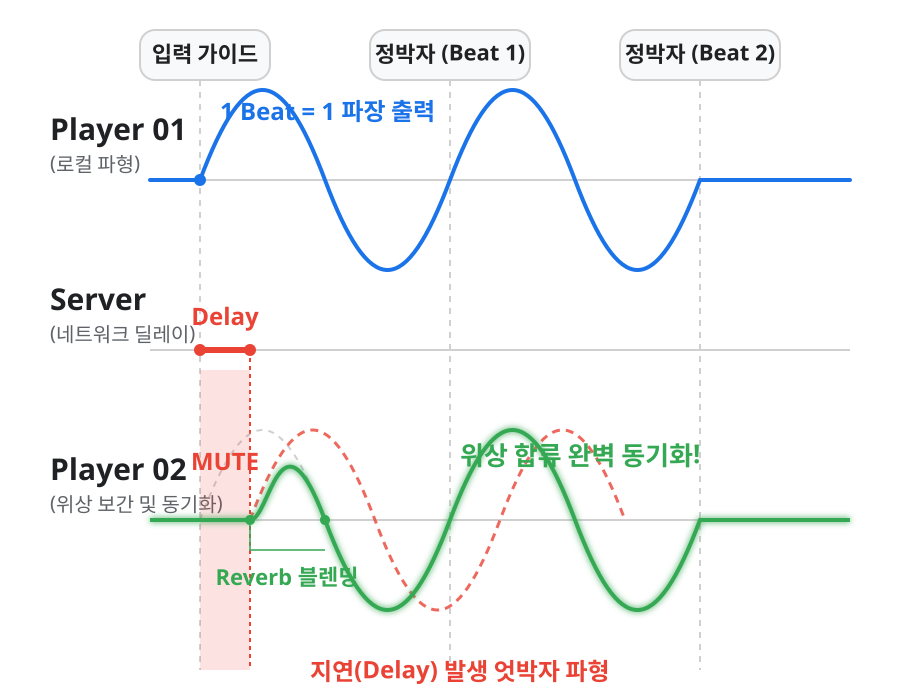
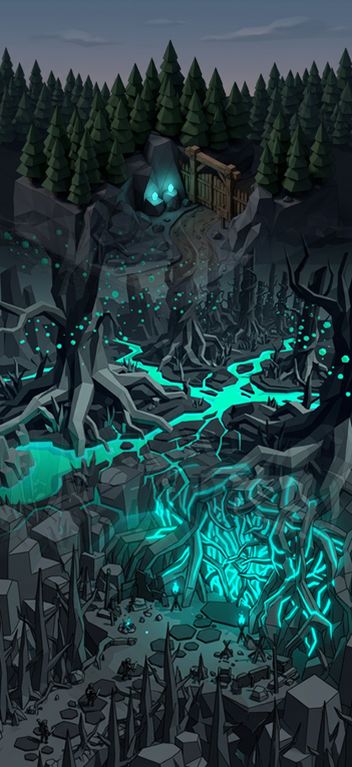
네트워크 래깅 방어 및 데이터 무결성 훼손을 방지합니다.
기본 필드 환경은 무너진 신전과 인공물 위로 깊은 숲이 침식한 다크 판타지입니다. 주요 광석인 맥석(Pulse Stone)들이 식물의 뿌리와 결합해 주변을 청록색과 마젠타(Magenta) 네온 빛으로 물들입니다. 인간의 발길이 끊긴 이 공간은, 플레이어가 최초로 '리듬 전투'와 '공간 텔레그래핑'을 학습하는 인큐베이터 역할을 수행합니다.
본 게임은 기계적인 패턴 조립이나 스킨 씌우기를 배제하며, 각 몬스터가 맵 환경에 완전히 일체화된 생태계적 당위성을 갖게 하는 방향으로 개발합니다.
Forest 1-1의 '구역별 기승전결(3-Sections)' 파이프라인을 완벽히 구축한 후, 다음과 같은 방식으로 다음 지역을 스케일링 전개합니다:
리듬 게임 특유의 록인 유저(Steam)와 쿼터뷰 협동 템포 RPG 유저층을 동시에 흡수해 캐시카우를 폭넓게 가져갑니다. (Buy-to-Play 기본 패키지 + 아바타 코스메틱/시즌 레이드 확장팩 판매 모델)
| 추진 일정 | 핵심 산출물 및 개발 단계 (Devcampe Milestone) |
|---|---|
| 26년 4~5월 | [코어 메커니즘 구축] • C# Game Server / API / PostgreSQL 아키텍처 연동 • 클라이언트 Quantize 스냅핑 0ms 엔진 싱크 적용 • Dark&Neon [Forest 1-1] 환경 구축 및 TreeGuard 메커니즘 연동 |
| 26년 6~7월 | [무기 6-Slot 앙상블 완성] • Q/W/E/R 인벤토리 덱 조합 UI 및 맥석 장착 로직 도입 • 대검/쌍검 등 무기별 오디오 주파수 믹싱 모듈 반영 |
| 26년 8~9월 | [보스 레이드 및 공명(QTE) 시스템 테스트] • 보스의 증4도 불협화음 왜곡 디버프 및 엇박자 전조 시스템 탑재 • 파티 동기화 Co-op 방어 로직 완비 |
| 26년 10~11월 | [FGT 게임 폴리싱 및 버티컬 슬라이스 최종 제출] • Forest 1-1의 3개 섹션 시퀀스 및 보람찬 루팅 사이클 완수 • FGT를 반영한 데미지 밸런스와 판정 유예(Tolerance) 완화 • BIC 및 스팀 퍼블리셔 제안용 Pitch Deck 자료 마무리 |